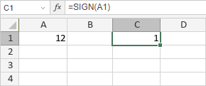

SIGN funkcija
SIGN funkcija je jedna od matematičkih i trigonometrijskih funkcija. Koristi se za vraćanje znaka broja. Ako je broj pozitivan, funkcija vraća 1. Ako je broj negativan, funkcija vraća -1. Ako je broj 0, funkcija vraća 0.
Sintaksa
SIGN(number)
SIGN funkcija ima sledeći argument:
| Argument | Opis |
|---|---|
| number | Numerička vrednost za koju želite da dobijete znak. |
Napomene
Kako primeniti SIGN funkciju.
Primeri
Traženi argument je A1, gde je A1 jednako 12. Broj je pozitivan, tako da funkcija vraća 1.

Ako promenimo vrednost ćelije A1 sa 12 na -12, funkcija vraća -1: